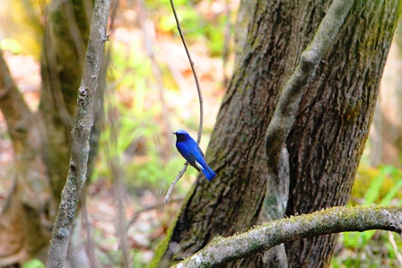
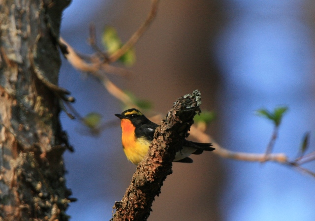
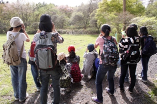
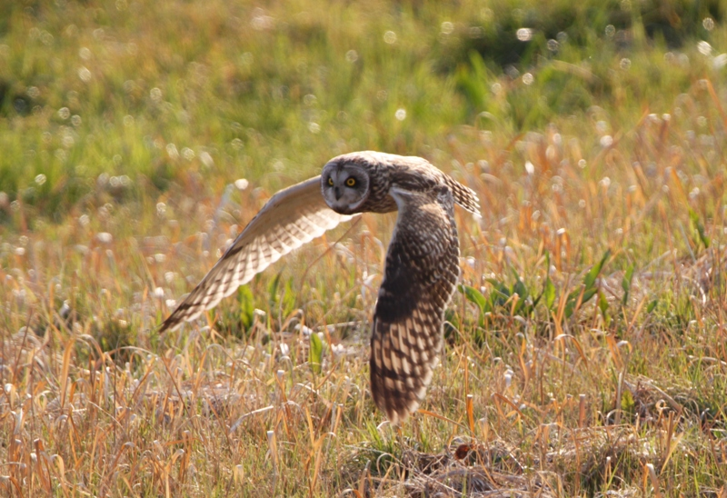
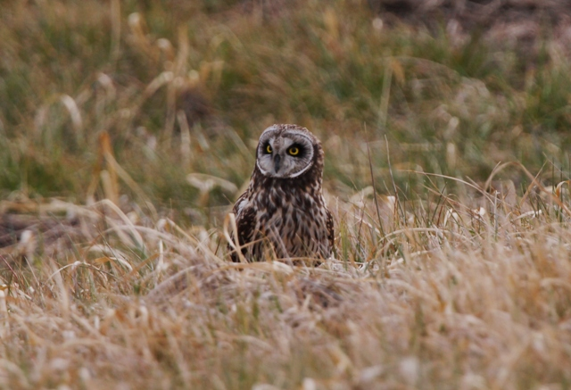
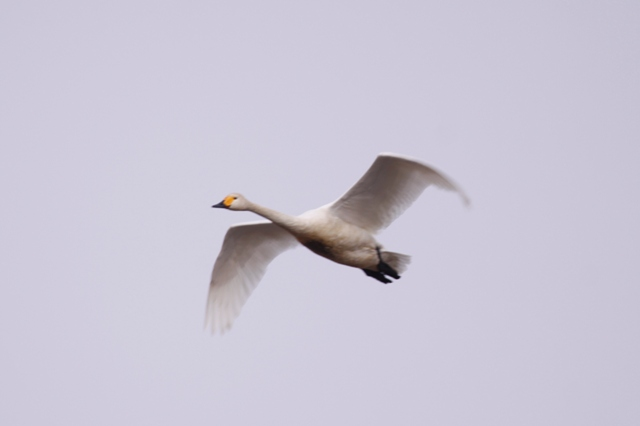
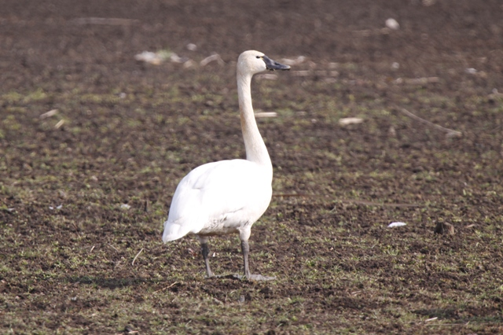
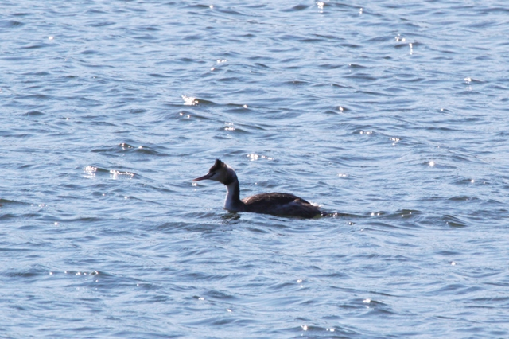

自然劇場の記録
※ここに掲載されている写真の一部はは当日撮ったものではありません。自然劇場のイメージを伝える写真を選びました。撮影者…斉藤俊雄
第５回自然劇場(久喜中学校演劇部) 2011年5月8日(日) 滝尾神社周辺・日光小倉山自然公園
第４回自然劇場(久喜中学校演劇部) 2010年5月8日(土) 滝尾神社周辺・日光小倉山自然公園
第３回自然劇場(久喜中学校演劇部) 2010年3月6日(土) 利根川・フクロウを見に
第２回自然劇場(久喜中学校演劇部) 2010年2月14日(日) 群馬県多々良沼
第１回自然劇場(久喜中学校演劇部) 2010年1月30日(土) 久喜菖蒲公園
第５回自然劇場 2002年5月8日(日) 森を感じに日光へ
日光へ。
自然劇場に現れた鳥達
2002年５月８日(土) 滝尾神社周辺・小倉山自然公園
| 1 |
カワラヒワ |
2 |
ハシブトガラス |
3 |
エナガ |
4 |
シジュウカラ |
5 |
ヤマガラ |
| 6 |
ヤブサメ |
7 |
ウグイス |
8 |
センダイムシクイ |
9 |
オオルリ |
10 |
キビタキ |
| 11 |
ミソサザイ |
12 |
サンショウクイ |
13 |
ヒヨドリ |
14 |
モズ |
15 |
ムクドリ |
|
16
|
コゲラ |
17 |
キジバト |
18 |
キセキレイ |
19 |
ハクセキレイ |
20 |
カワガラス |
| 21 |
ツバメ |
|
|
|
|
|
|
|
|
今年初めての自然劇場を日光で開催することになった。
東日本大震災の後ということがあり、開催するかどうか迷った。
全国的に旅行を自粛する傾向があったからだ。
日光滝尾神社周辺・小倉山自然公園は崖崩れを心配するような危険なところはない。
何度も行った場所ではあるが、下見に行き、そこで旅行者が戻ってきている状況を目にし、開催することにした。
ただ、保護者の中には心配する方もあるだろうと思い、希望者のみという形にした。全員希望であったが。
新１年生１０人も全員参加することになった。
今年の夏の上演劇は『怪談の多い料理店』、第６話のタイトルは『幻の森』。
七つ森中学校に幻の森が現れるという話だ。
私は劇を上演するときに、部員が世界を共有することを大切にしている。
今回は学校に現れる森を共有してほしかった。そして、共有する森を日光に求めた。
日光の素晴らしい森に、ただ行くだけではもったいない。
それで今年も鳥や花を事前学習してから行くことにした。
自分が撮りためている写真を使い、部全体を複数のグループに分けてクイズ合戦をする。それを何回か行った。
驚いたのは２年生の中に鳥について非常に詳しくなっている生徒がいたことだ。
「鳥博士」というあだ名がついてもいいくらいに豊富な知識を身につけていた。
楽しみながらたくさんの鳥を覚え、それぞれが見たいあこがれの鳥を決めた。
鳥も目的の場所に行って間もないうちは、「鳥だ」「また鳥だ」で面白いが、それだけでは１日興味を持続するのは難しい。
「オオルリだ。何てきれいな青なんだ」「キビタキだ、黄色がきれい」「このスミレはヒナスミレ、そしてこれはエイザンスミレ」
、ただ名前を覚えるだけではなく、それぞれの美しさ素晴らしさまで感じるレベルまで高めた自然観察は面白い。
感性も磨かれ、それが演技の向上にもつながる。
さて昨年、上級生全員がオオルリを見ているので、今年のあこがれの鳥はミソサザイが多かった。
ただオオルリは美しい。何度見ても美しく心ときめかされる鳥だ。
生徒たちもそうあってほしかった。
今年は観察を始めてすぐオオルリが見られた。みんな大喜びだった。
そして、今年はもう一つの青い生き物を見ることができた。
それはトカゲ。学校でよくみかけるトカゲは正式名称・カナヘビ。青い尾をもってはいない。
青いトカゲを見るのは全員初めてということで、みんな大喜び。
はじめは怖がっていた生徒も、先輩が全然怖がらなく「かわいい、かわいい」というので、
そんなものなのかなと思い次第次第に「怖い」が「かわいい」に変わっていった。あこがれである先輩の影響力はすごい。
私は部活のこんな空気が好きだ。
 ヒトリシズカの花も見ることができた。
ヒトリシズカの花も見ることができた。
この花は第６話に七つ森に伝わる伝説として出てくる花。
この時点では登場が決まっていなかったが、全員がこの花を見ることができたこともよかった。
実は、今回の自然劇場の中で、今まで出会いたいと願いながらも出会えないでいた植物のひとつに出会った。花はまだ蕾の状態だった。私は部員にすてきな秘密を話すように、その植物について話した。「これはずっと出会いたいと思いながら、出会えないでいた植物なんだ」
私はどうしてもその花の写真が撮りたくて、翌週再び日光を訪れ、その花の写真を撮った。地味だけど美しい花だと思う。
この花の名前はここに書くと検索にかかるので、書かないでおく。
Top
ダイジェストに戻る
第４回自然劇場 2010年5月8日(日) オオルリを探しに日光へ
日光へ。
自然劇場に現れた鳥達
2010年5月8日(日) 滝尾神社周辺・小倉山自然公園
| 1 |
カワラヒワ |
2 |
ハシブトガラス |
3 |
エナガ |
4 |
シジュウカラ |
5 |
ヤマガラ |
| 6 |
キジ |
7 |
ウグイス |
8 |
センダイムシクイ |
9 |
オオルリ |
10 |
キビタキ |
| 11 |
ミソサザイ |
12 |
サンショウクイ |
13 |
ヒヨドリ |
14 |
モズ |
15 |
ムクドリ |
|
16
|
コゲラ |
17 |
キジバト |
18 |
キセキレイ |
19 |
ハクセキレイ |
20 |
ツバメ |
久喜中学校演劇部にとって初めての日光での自然劇場。 今回のお目当てはオオルリ。 
実はオオルリは先日行われた演劇の関東大会で久喜中演劇部が上演した『七つ森』に登場する鳥だ。
主人公の隼人君はルリと名づけられたオオルリと会話することができる。
できれば『七つ森』上演の前にオオルリを見せたかったが、オオルリは夏鳥。
劇が上演された３月には日本では見ることができない鳥だった。
劇が終わった後ではあるが、みんなで劇に登場したオオルリを見るということは、共通の体験・思い出を持つという点でもとても大切なことだと思った。
オオルリの瑠璃色は本当に美しい。鳥を見始めた頃の私の１番のあこがれの鳥はオオルリだった。
もう何回見たかわからないほど見た鳥ではあるが、今でもオオルリを見ると胸がときめく。
日光に行くもう一つの目的は、みんなで森を感じること。
今年の夏の上演劇は『森の交響曲(シンフォニー)』に決定した。
鳥の囀り、森に吹く風、夜の響など様々な要素が響き合う物語だ。
森を訪れることなしに森を感じることは難しい。
みんなが森で共通の思い出を持てば、劇の中でその思いを共有することができる。
数々のすてきな思い出を共有すること、それは僕が劇に取り組むとき特に大切にしていることだ。
私は、日光の森ですてきな思い出を共有してほしかった。
楽しみながら学ぶために、クイズ形式で何度も何度も鳥を学んだ。
演劇部なのに２週間自然の勉強ばかりしていた。
しかし、クイズ形式ということもあり、その学びは楽しいものだったと思う。
何人かは驚くほど鳥に詳しくなった。
花も紹介したが、部員は鳥のほうに多くの魅力を感じていた。
当日は校長先生も参加し、花談義に花が咲いた。
目的地に着くとすぐに次々と鳥が現れた。久喜市では見ることがない鳥たちだった。
キビタキ、エナガ、そして目的のオオルリも現れた。
普通ならこれで満足というところだが、たくさん学んできた彼女たち、予定では次の場所に移動しなくてはならない時間が来たが、
３年生の何人かが 「ミソサザイを見てないので、まだここにいたい」 と訴えてきた。
「もう飽きた。早く次の場所に行きたい」ではなく、まだここにいたいという声。これが大切だ。
劇の練習でもこれは同じだ。
「もっとやりたい」「もう終わりですか」「もうすこしやらせてください」 、私はこのような言葉が飛び交う部の空気が表現を伸ばすと考えている。
常に高いモティベーションに空気が満ちていること、私はそれがとても大切だと思う。
予定を少し変更しても、大丈夫と判断し、昼食次の目的地ではなくミソサザイが見られる可能性がある今いる場所に変更した。
ただ、鳴き声は聞こえるのに姿は見ることができなかった。
次の目的地では、電線に止まるオオルリを見ることができた。
写真に撮ると味気ないが、姿を隠す葉や小枝のない電線にとまるオオルリは見やすかった。
 そして、最後はキジのつがいが登場してくれた。
そして、最後はキジのつがいが登場してくれた。
このつがいは肉眼でもはっきり見える１まで次第次第に近づいてくれるほどサービス精神旺盛だった。
最後は電車に間に合わなくなるので別れを告げた。
『森の交響曲』のラストで、森に息づいている生命は次々と消えていく。
そして最後は森そのものがなくなるのだ。
本番の舞台で、彼女たちの目から本物の涙が流れ落ちたのは、みんなが森を共有していたからだと思う。
森の美しさ森の素晴らしさを目にしていたからだと思う。
日光での自然劇場。思い出深いものになった。
Top
ダイジェストに戻る
第３回自然劇場 2010年3月6日（土） 利根川・フクロウを探しに
久喜中からそれほど離れていない利根川に冬に渡ってくるフクロウ・コミミズクが複数を来ている。フクロウを見るなど、一生のうちでも多くの人が体験できることではない。せっかくのチャンスなので保護者に手伝ってもらいフクロウを見に行った。
自然劇場に現れた鳥達
2010年3月6日（土） 利根川・フクロウを見に行く
| 1 |
コミミズク |
|
|
|
|
|
|
|
|
フクロウという鳥を知らない大人はまずいないだろう。しかし、実際に見たことがある人はどれくらいいるだろう。
３月６日(土)に行われた関東に向けての演劇部保護者会で、そのことを質問してみた。
保護者の中にフクロウを見た方は一人もいなかった。もちろん部員の中にも一人もいない。
鉄は熱いうちに打て。鳥に興味を持つようになった部員たちは、今、フクロウに出会えば、その興味は体の奥深くまで染み通るだろう。
ということで保護者の協力を得て保護者会終了後、私たち演劇部はこの冬、久喜市近隣に定着したフクロウを見に行った(４人の保護者が車を出してくださった)。
目指すフクロウの名はコミミズク。
冬に北の国から日本に渡ってくるフクロウの仲間だ。
目的地到着後、１０分近く土手を歩いた。
その時、突然コミミズクが飛び立った。みんなでそのフクロウを追った。
１０人を超える女子中学生が双眼鏡片手にフクロウを追って走った。
全国でもあまり目にすることがない風景ではないだろうか。
絶滅が危惧されているコミミズクの存在よりも、こちらの方が珍しい存在かもしれない。
さきほどのフクロウは土手に降りしばらくの間そこでじっとしていた。
しかし、近くを通った車に驚きフクロウは飛び去り、視界から消えていった。
がっかりしている部員を、野鳥好きのおじさんたちが土手の下から手招きで呼んでいる。
野鳥好きのおじさん方はフィールドスコープ(鳥を見るための望遠鏡)で部員たちに前述のフクロウとは別の個体のフクロウを見せてくださった。
おじさん方はとっても優しく部員達は大喜び。
今日もよい練習ができた。
Top
ダイジェストに戻る
第２回自然劇場 2010年2月14日(日) 群馬県多々良沼
関東大会で上演する『七つ森』。その中で登場するタカを感じるため、群馬県・多々良沼に出かけた。４種類のタカと３種類の白鳥など全部で４９種類の鳥を見ることができた。
自然劇場に現れた鳥達
2001年4月8日(日) 群馬県多々良沼
| 1 |
オオジュリン |
2 |
コガモ |
3 |
ヒドリガモ |
4 |
オナガガモ |
5 |
カルガモ |
| 6 |
マガモ |
7 |
ミコアイサ |
8 |
コハクチョウ
アメリカコハクチョウ |
9 |
オオハクチョウ |
10 |
コブハクチョウ |
| 11 |
カイツブリ |
12 |
カンムリカイツブリ |
13 |
カワウ |
14 |
コサギ |
15 |
ダイサギ |
|
16
|
アオサギ |
17 |
オオバン |
18 |
カワラヒワ |
19 |
シメ |
20 |
アオジ |
|
21
|
スズメ |
22 |
モズ |
23 |
ジョウビタキ |
24 |
メジロ |
25 |
キジバト |
|
26
|
ヒヨドリ |
27 |
ムクドリ |
28 |
トビ |
29 |
オナガ |
30 |
ハシブトガラス |
|
31
|
ハシボソガラス |
32 |
ミヤマガラス |
33 |
シジュウカラ |
34 |
カシラダカ |
35 |
ホオジロ |
|
36
|
ウグイス |
37 |
ツグミ |
38 |
アカゲラ |
39 |
カケス |
40 |
キジ |
|
41
|
ヒバリ |
42 |
セグロセキレイ |
43 |
ハクセキレイ |
44 |
オオタカ |
45 |
チョウゲンボウ |
|
46
|
ノスリ |
47 |
カワセミ |
48 |
ベニマシコ |
49 |
ドバト |
|
|
第２回の自然劇場の開催地予定地は群馬県の多々良沼。
はじめは２月６日(土)に出かける予定だった。しかしこの日は暴風が吹き荒れるという予報のため前日、延期を決めた。
朝起きた時は風はなく日差しも暖かだった。
思わず、判断を誤ったかと思ったが、９時頃から風が吹き出し、午後になると暴風が吹き荒れた。
もし、強行していたら「野鳥観察なんてもうこりごり」という思いをしただろう。
延期は２月１１日(木)の建国記念の日に。ところがこの日も悪天候で更に２月１３日(土)に延期。
ところが２月１３日(土)は雪。結局２月１４日(日)に出かけた(みんなバレンタインデーでも大丈夫だというので)。
雪で化粧された多々良沼は美しかった。 
多々良沼は久喜から東武伊勢崎線を使って乗り換えなしで行くことができる。隣の群馬県だが遠くはない。
毎年１００羽を越える白鳥が訪れることで有名である。
今年はNHKのニュースでも紹介されていた。
部員たちは生まれてはじめて見る白鳥に大はしゃぎだった。
オオハクチョウ、コブハクチョウ、コハクチョウの３種の白鳥を見ることができた。
また、サプライズとしてコハクチョウの亜種である珍鳥アメリカコハクチョウまで見ることもできた。
大型キツツキのアカゲラを３年生が発見した。ここでは期待できないと思っていた赤い鳥ベニマシコを見ることができた。コバルトブルーに輝く水辺の宝石カワセミもみんなで見ることができた。
ここでの野鳥観察の第一の目的はタカ類を見ることだった。
関東大会で上演する劇『七つ森』の中でタカが重要な役で登場するからだ。
 劇中に「タカだ、タカだぞ」と叫んで、登場人物達が悠然と空を舞うタカを眺めるシーンがある。
劇中に「タカだ、タカだぞ」と叫んで、登場人物達が悠然と空を舞うタカを眺めるシーンがある。
それをみんなで体験したかった。
幸いこの日はノスリ、オオタカ、チョウゲンボウ、トビの４種類のタカを見ることができた。
タカの舞を共有した部員は劇の中でこの時のタカの舞を思い出し、生きた表現をしてくれることだろう。
この日は何と１日で５０種類の鳥を見ることができた。
この日も遊びであり勉強でもある楽しい練習ができた。
Top
ダイジェストに戻る
第１回自然劇場 2010年1月30日（土） 久喜中学校演劇部・初めての自然劇場
キジを求めて春の探鳥会に。自然劇場では初登場のマヒワの集団を見ることができた。キジも♂が悠然と畑の中を歩いていた。今回の自然劇場は五感を研ぎ澄ます場となったと感じている。
自然劇場に現れた鳥達
2010年1月30日（土） 久喜市昭和池
| 1 |
カイツブリ |
2 |
カワウ |
3 |
コサギ |
4 |
ダイサギ |
5 |
オオバン |
| 6 |
バン |
7 |
カルガモ |
8 |
コガモ |
9 |
イソシギ |
10 |
キジ |
| 11 |
コジュケイ |
12 |
キジバト |
13 |
コゲラ |
14 |
ツバメ |
15 |
キセキレイ |
|
16
|
ハクセキレイ |
17 |
ヒバリ |
18 |
ヒヨドリ |
19 |
モズ |
20 |
ジョウビタキ |
| 21 |
シロハラ |
22 |
ツグミ |
23 |
ウグイス |
24 |
シジュウカラ |
25 |
アオジ |
| 26 |
カシラダカ |
27 |
ホオジロ |
28 |
カワラヒワ |
29 |
マヒワ |
30 |
スズメ |
| 31 |
ムクドリ |
32 |
オナガ |
33 |
ハシブトガラス |
34 |
ハシボソガラス |
35 |
カンムリカイツブリ |
私は演劇部が行う自然観察の会を自然劇場と呼んでいる。自然の劇場に出向いて、そこで自然のドラマに触れる。
第1回の自然劇場の舞台は昭和池。久喜中から自転車で20分程度のところにある水鳥の宝庫である。
この自然劇場のために一週間のほとんどを野鳥の紹介に費やした。
理科室にある鳥の図鑑を借り、全員に配布した。
自分が今まで撮りためていた写真も使い、クイズを出しながら自然劇場で見ることができそうな鳥を紹介した。
自然劇場の本番、1月30日(土)は絶好の鳥見日和。部員は池に浮かぶたくさんのカモに大はしゃぎ。
全員が次の劇で重要な役割を演じる鳥を感じることができた。
ちょっとしたサプライズもあった。
鳥にとても詳しくなった部長が「あれ何ですか？」と聞いてきた。
その、鳥は昭和池では珍しいカンムリカイツブリだった。
トータルで34種類の鳥を見ることができた。美しいものは心を豊かにする。私はこんな取り組みが大好きだ。
野鳥観察は遊びであり、楽しみであり、勉強であり、そして表現を伸ばす大切な練習である。
Top ダイジェストに戻る HOME